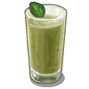
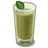
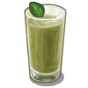

{% if food[1] == 'potato' %}{% endif %} {% if food[1] == 'carrot' %}{% endif %} {% if food[1] == 'strawberry' %}{% endif %} {% if food[1] == 'seed' %}{% endif %} {% if food[1] == 'rice' %}{% endif %} {% if food[1] == 'zucchini' %}{% endif %} {% if food[1] == 'smoothie' %}{% endif %} {% if food[1] == 'soup' %}{% endif %} {% if food[1] == 'lentils' %}{% endif %} {% if food[1] == 'stew' %}{% endif %} {% if food[1] == 'tomato' %}{% endif %} {% if food[1] == 'generic' %}{% endif %} {{ food[0] }}
{% endfor %}{% endfor %} {% if not menu %}Ei ruokia tälle päivälle. :(
{% if menu %} (A) Contains allergens | (G) Gluten free{% endif %} Last updated {{ update_time }}
 veg.fi | {{ day }}
veg.fi | {{ day }}
 {% endif %}
{% if food[1] == 'carrot' %}
{% endif %}
{% if food[1] == 'carrot' %} {% endif %}
{% if food[1] == 'strawberry' %}
{% endif %}
{% if food[1] == 'strawberry' %} {% endif %}
{% if food[1] == 'seed' %}
{% endif %}
{% if food[1] == 'seed' %} {% endif %}
{% if food[1] == 'rice' %}
{% endif %}
{% if food[1] == 'rice' %} {% endif %}
{% if food[1] == 'zucchini' %}
{% endif %}
{% if food[1] == 'zucchini' %} {% endif %}
{% if food[1] == 'smoothie' %}{% endif %}
{% if food[1] == 'soup' %}
{% endif %}
{% if food[1] == 'smoothie' %}{% endif %}
{% if food[1] == 'soup' %} {% endif %}
{% if food[1] == 'lentils' %}
{% endif %}
{% if food[1] == 'lentils' %} {% endif %}
{% if food[1] == 'stew' %}
{% endif %}
{% if food[1] == 'stew' %} {% endif %}
{% if food[1] == 'tomato' %}
{% endif %}
{% if food[1] == 'tomato' %} {% endif %}
{% if food[1] == 'generic' %}
{% endif %}
{% if food[1] == 'generic' %} {% endif %}
{{ food[0] }}
{% endif %}
{{ food[0] }}